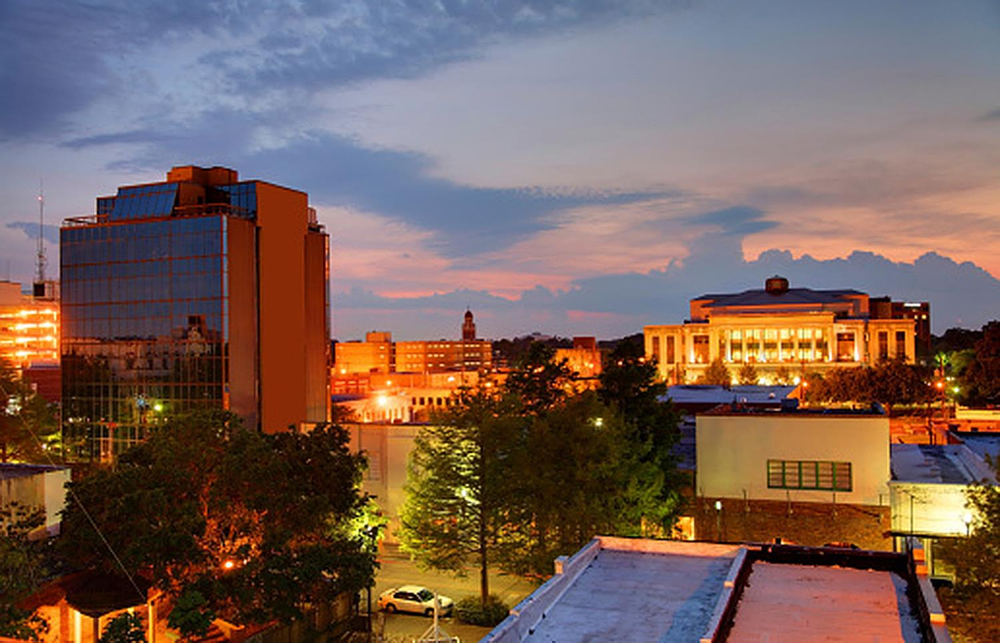

Public spaces are where our community members come to be together and are the locations for our festivals, cook-offs, concerts and the other gatherings to bring us together. We celebrate our cultures, each other and also where we remember those we’ve lost or who need our help. Our public spaces are also where we seek recreation, play or simply a break in your day. Our public spaces also offer inspiration and expression through public art sculptures, murals and other assets. The UL Capstone Project and CGI have put all of our beloved public spaces in one central place to discover and enjoy. Allons à Lafayette!